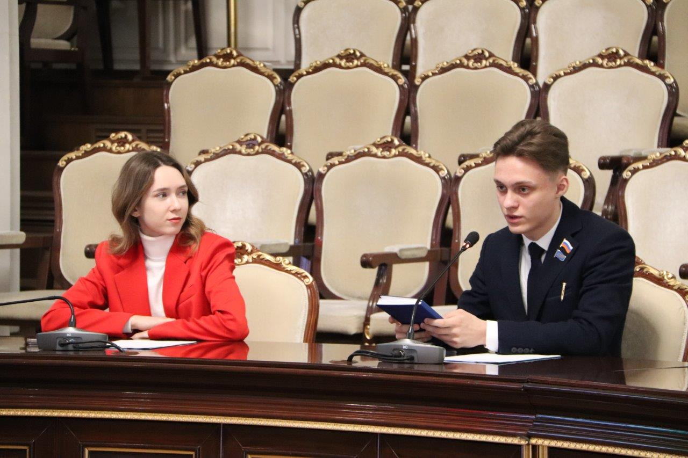

ОТВЕТЫ НА ЧАСТО ЗАДАВАЕМЫЕ ВОПРОСЫ
Чем ты вообще будешь заниматься в Молодёжном Парламенте НСО?
Помимо продвижения инициатив моей предвыборной программы в Молодёжном Парламенте и их реализации на территории моего избирательного округа - я также буду являться главным представителем молодёжи города Бердска в законодательной власти Новосибирской области. Моей основной задачей будет являться представление ваших интересов в Законодательном Собрании НСО. Например, я могу вносить наши общие законопроекты и инициативы в Молодёжный Парламент. Также буду в тесной связке взаимодействовать с Отделом по делам молодёжи и другими общественными организациями Бердска для реализации интересного досуга молодёжи.
Приведу простые примеры:
- на улицах Бердска службы управления плохо справляются с уборкой снега, я как депутат-молодёжник могу придать данную проблему широкой огласке, а также начать контактировать с муниципальными депутатами, а также подавать от имени депутатов Заксобрания обращения в различные инстанции для решения подобных проблем;
- мои избиратели (например вы) захотели в Бердске мероприятие на спортивную тематику. Я совместно с депутатами муниципального уровня организую данную инициативу и мобилизую из числа активистов и молодёжи участников для данного мероприятия.
Вот мы проголосуем за тебя. И как дальше с тобой поддерживать контакт?
После встреч с молодёжными активами в рамках своего предвыборного тура я создаю общие чаты с избирателями для дальнейшей поддежрки общения. В данных беседах я буду делится с потенциальными избирателями всей информацией по выборам и моей профессиональной деятельности после. В данных чатах вы можете задавать мне вопросы, предлагать свои инициативы и как-либо взаимодействовать со мной. Помните, что в случае моего избрания в Молодёжный Парламент НСО - я в первую очередь представляю вас и ваши интересы!
Если вдруг вы не попали ни на одну из моих предвыборных встреч, то свяжитесь со мной во ВКонтакте или Telegram/WhatsApp: +7 (952) 942-37-54 - посредством переписки вы можете связаться со мной и обсудить все интересующие вас вопросы!
Помимо обещаний будут ли реальные действия? Многие кандидаты в депутаты делают грандиозные обещания, но не выполняют их.
Стоит понимать, что в отличие от некоторых кандидатов на политические должности, которых интересует лишь обеспечение выгодного для себя существования в рамках капиталистического общества, мной движет идея - привнести в общество что-то новое и сделать его лучше!
Я являюсь выходцем из обычной среднестатистической русской семьи и не вижу для себя корыстных целей в рамках политической деятельности. Занимаюсь я политической/общественной деятельностью, так как издавна к этому лежит моя душа и я проявляю к данной сфере максимальный интерес.
Какая будет для тебя выгода если победишь на выборах 26 апреля?
Сразу отмечу, что материальной выгоды не будет НИКАКОЙ.
Свою жизнь я планирую связать в дальнейшем с политикой и Молодёжный Парламент Новосибирской области для этого является отличным стартом. В статусе молодёжного парламентария я смогу начать с азов привносить ценный вклад в молодёжную политику на территории своей малой родины - города Бердска!
В период трёхлетнего V созыва Молодёжного Парламента выгода моего членства в данном образовании при Законодательном Собрании Новосибирской области будет заключаться только в моей возможности работы на собственный имидж и авторитет среди избирателей города Бердска. Ведь в случае моей успешной и эффективной деятельности я буду в закономерном порядке получать лояльное отношение молодёжи и в целом граждан к своей персоне и в конечном итоге смогу в дальнейшем продвигать свою кандидатуру на выборах более серьёзного уровня, заручившись поддержкой лояльного ко мне, а главное единого и консолидированного электората!
Как и где можно проголосовать?
Со всей информацией о выборах членов Молодёжного Парламента НСО V созыва с ответом на вопрос "где и как можно проголосовать" вы можете ознакомиться на специальной странице.
ПРЕДВЫБОРНАЯ ПРОГРАММА ВОРОНЦОВА
Перед тем, как перейти к самим инициативам и программным установкам, я хотел бы обозначить видимый мной перспективный и наиболее эффективный вектор работы Молодёжного парламента Новосибирской области грядущего V созыва.
В первую очередь стоит понимать, что как и в других парламентах более серьёзного уровня - пройдут кандидаты от разных общественных организаций и политических партий. Зачастую это может вызывать деструктивное соперничество представителей различных политических сил, что больше приводит к раздору и недопониманию среди парламентариев. Вряд ли получится в подобной ситуации достичь эффективной командной работы на благо молодёжи Новосибирской области.
В сфере молодёжной политики не должно быть деструктивной конкуренции, ведь у всех политических сил цель здесь одна - представлять интересы молодёжи региона, а также быть связующим звеном между молодым поколением и правительством Новосибирской области.
Именно поэтому я не страюсь везде и всюду оглашать свою принадлежность ЛДПР - Либерально-демократической партии России. Делаю я это только в тех случаях, когда это уместно и требует обстановка. Членство в разных политических партиях должно служить не как средство для борьбы с оппонентами, а как полезный инструмент, ведь при помощи региональных отделений разных партий возможно вовлекать большое множество ресурсов для организации совместных мероприятий и воплощения в жизнь проектов различного уровня. Именно поэтому Молодёжный парламент Новосибирской области V созыва должен стать единым и консолидированным!

ВАЖНО МНЕНИЕ КАЖДОГО!
Могу назвать свою предвыборную программу конструктивной и актуальной, так как она базируется не только сугубо на моих суждениях и моём видении, а также на предложениях и комментариях представителей молодёжи по нашему региону.
В рамках своего предвыборного тура я посещаю школы, общественные организации и не только, где провожу встречи с избирателями. Я слышу каждого и принимаю мнение и предложения на счёт моей предвыборной программы к сведению!
Также мной был запущен онлайн-опрос молодёжи, на основании которого я также выстраиваю свои программные установки. Пройдите же и вы мой опрос и повлияйте с лучшей стороны на молодёжную политику Новосибирской области!

ВОВЛЕЧЕНИЕ МОЛОДЁЖИ
Я считаю, что нужно вовлекать нашу молодёжь во внутреннюю жизнь страны. Ведь невозможно быть объективным в своём мнении и взглядах, когда нет действительного понимания происходящего вокруг. Молодёжь с активной гражданской позицией - лучшая молодёжь!
Я предлагаю при помощи получения регионального гранта реализацию ежегодного проекта на базе определённого оздоровительного лагеря «Политическая школа Молодёжного парламента НСО», сутью которого будет проведение обучающих лекций на темы внутренней/внешней политики и избирательного права приглашёнными спикерами-политиками, некоторые из которых по совместительству будут членами жюри, а также реализация в рамках проекта интерактивных заданий для команд-участников.
Предполагается, что смена проекта будет длиться около недели. Участниками проекта предварительно должны стать сформированные учебными заведениями и общественными организациями команды из молодёжи.
Данный проект поспособствует увеличению заинтересованности молодёжи в политической жизни страны, а также повысит явку на выборах всех уровней.
ПОДДЕРЖКА СОВРЕМЕННЫХ ТЕНДЕНЦИЙ СРЕДИ МОЛОДЁЖИ
В связи с популяризацией информационных технологий многие представители молодого поколения интересуются новыми направлениями развития. Например, молодёжь видит перспективу в современном, а главное популярном направлении спортивных состязаний - в киберспорте.
Мной предлагается реализовать проект, организуемый на регулярной основе, по проведению региональных киберспортивных турниров с последующим увеличением данной тенденции в Новосибирской области.
Предполагается, что команды будут формироваться учебными заведениями, общественными организациями и самостоятельными объединениями молодых киберспортсменов. Киберспортивными дисциплинами будет являться «золотой стандарт»: «CS2», «Dota 2» и так далее, но по возможности реализации будут продвигаться отечественные киберспортивные дисциплины.
Данный проект поспособствует развитию тенденции киберспортивных турниров в регионе и потенциально поспособствует увеличению популярности отечественных киберспортивных дисциплин, а также простимулирует процесс подготовки профессиональных киберспортсменов всероссийского уровня от Новосибирской области.
Напомню, что киберспорт полностью легализован на территории Российской Федерации приказом Министерства спорта Российской Федерации от 2016 года.
СООРГАНИЗОВАННОСТЬ ОБЩЕСТВЕННЫХ СИЛ
Я предлагаю на основе полученных результатов онлайн-опроса и предвыборных встреч с представителями общественных организаций и актива учебных заведений реализовать общую региональную сеть общественных/волонтёрских организаций, как самостоятельных, так и при учебных заведениях и политических партиях.
В президиум координационного совета данной сети будут назначены определённые члены Молодёжного парламента V созыва и представители самых результативных общественных организаций.
Данная инициатива поспособствует реализации более продуктивной и оптимизированной работе по региону в сфере общественной/волонтёрской деятельности, большей соорганизованности общественных/волонтёрских организаций, большему продвижению совместных инициатив и проектов, а также поспособствует возможности каждой, входящей в координационный совет, организации влиять на тенденцию общественной и волонтёрской деятельности в регионе вне зависимости от самостоятельного уровня влияния.
ДЕЯТЕЛЬНОСТЬ МОЛОДЁЖНОГО ПАРЛАМЕНТА НОВОСИБИРСКОЙ ОБЛАСТИ
Как вы считаете, многие ли наши сограждане знают о Молодёжном парламенте Новосибирской области и его деятельности? Лично мне кажется, что многие не осознают весь потенциал данного образования при Законодательном Собрании НСО и не воспринимают попросту всерьёз.
Я предлагаю развитие тенденции популяризации деятельности каждого члена Молодёжного парламента Новосибирской области V созыва и их становление лидерами общественного мнения.
Молодёжный парламент при Законодательном Собрании Новосибирской области является некой площадкой для подготовки будущих профессиональных политиков-парламентариев. Я выступаю за ещё большее увеличение данной тенденции и буду работать в данном направлении, а также предлагать программные установки по популяризации имиджа членов Молодёжного парламента Новосибирской области среди жителей их избирательных округов.
Деятельность каждого молодёжного парламентария должна освещаться на ресурсах Молодёжного парламента и Законодательного Собрания НСО. Должны быть реализованы медиа-рубрики с новостным материалом о проделанной работе Молодёжного парламента Новосибирской области. Должна быть огласка и продвижение, ведь без этих факторов наша молодёжь попросту будет в неведении о деятельности Молодёжного парламента НСО.
СТИМУЛЯЦИЯ РАБОТЫ МОЛОДЁЖНОГО ПАРЛАМЕНТА НОВОСИБИРСКОЙ ОБЛАСТИ
На основе моих наблюдений могу заявить, что деятельность нынешнего созыва Молодёжного парламента не столь активна, какой могла бы быть. Мной не наблюдается обширного спектра проектов и существенной огласки деятельности на страницах информационных ресурсов. Как быть с информационной оглаской я уже описал, но как же можно простимулировать работу Молодёжного парламента Новосибирской области...
Я предлагаю на основе Молодёжного парламента при Законодательном Собрании НСО учредить комитеты по актуальным среди молодёжи темам, а также рассмотреть правовой статус их существования при Законодательном Собрании НСО.
Предлагаются в качестве примера комитеты:
1. По сохранению исторической памяти;
2. По популяризации здорового образа жизни и предупреждения вредных привычек среди молодёжи;
3. По спортивному воспитанию молодёжи;
4. По информационной безопасности и технологиям;
5. По зоозащите и экологическому активизму;
И другие по мере выявления актуальных для молодёжи направлений.
Данная инициатива поспособствует в продуктивности работы Молодёжного парламента Новосибирской области как по различным актуальным направлениям, так и как единое целое.